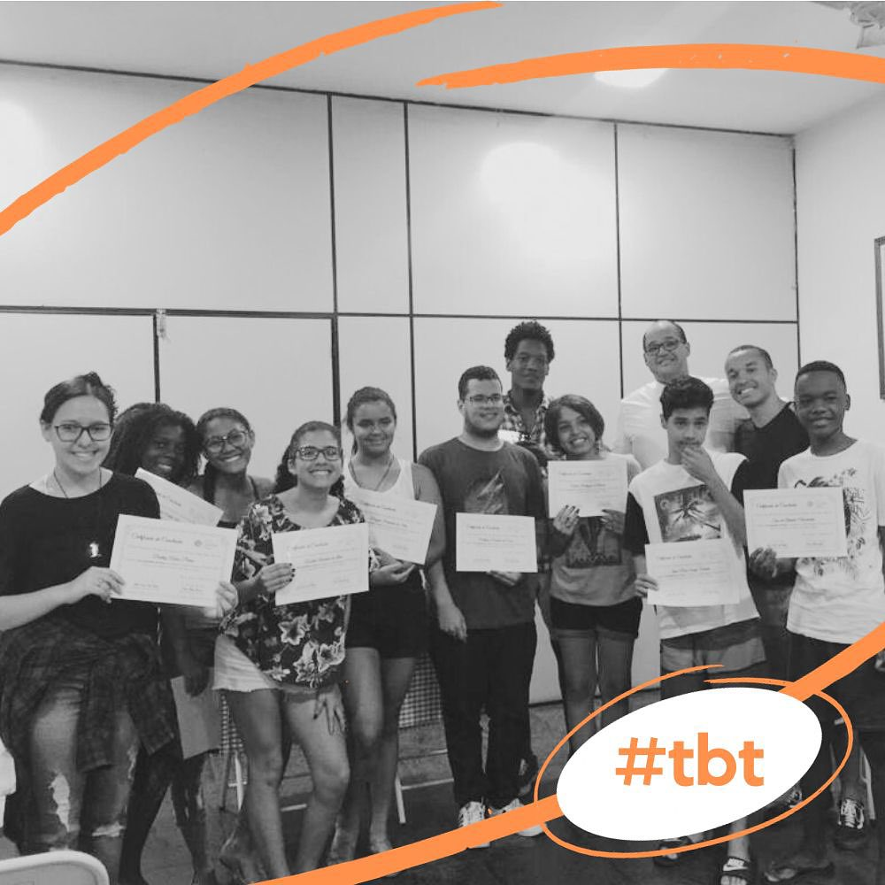
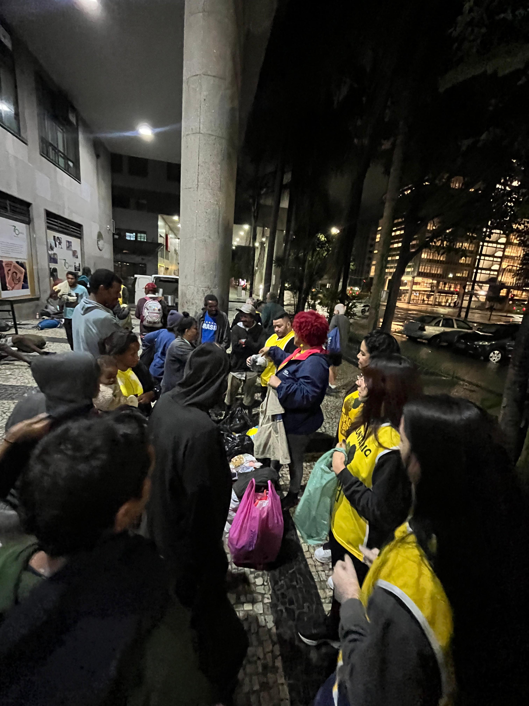

> industry_experience/
AI/ML Software Engineer (Placement Year) @ Apple
Siri Understanding – Natural Language Parsing & Tools
Aug 2023 - Aug 2024 | Cambridge, UK
I worked on Language Models Engineering and Operations for Apple Intelligence's current and next iteration of Siri.
Designed, coded and deployed to production both internal and user-facing projects in language models inference, evaluation, and real-time Siri response correction, participating in some architectural decisions for the new releases. Authored CLI tools for large datasets evaluation (Technical specifics under NDA).
Research Software Engineer Intern @ Microsoft Research
Computer Vision for Safety Surveillance Systems
Apr 2018 - Oct 2019 | Rio de Janeiro, BR
I worked in the real-time object detection project to detect falls and hazardous events, enhancing safety for patients in hospitals3 and for laborers in dangerous industrial environments, potentially saving their lives.
Developed and deployed to production a multi-module Python service for real-time object detection with surveillance cameras, featuring customizable settings and configurations (used daily for hundreds of cameras). Also developed ML pipelines, including data preprocessing and annotation workflows, automating input data processing for neural network training. Managed cloud infrastructure on Azure for data storage and migration, and created a full-stack application to configure and update new detection settings.
iOS Software Development Intern @ Apple Developer Academy
Jan 2016 - 2017 | Rio de Janeiro, BR
Architectural design, coding w/ Swift and visual identity of several iOS & tvOS apps. UI and UX prototyping using Sketch, AutoLayout and inVision.
Software Development Intern @ VTEX e-commerce
Winter 2015 | Rio de Janeiro, BR
Brainstorming, planning and development of the first iteration of the Wishlist web application (React.JS + Flux) targeting VTEX platform online stores.
> education/
Master of Science (Research-based), Electrical Engineering
2021 - 2025Universidade Federal do Rio de Janeiro
Dissertation: “Aedes aegypti breeding sites detection with Computer Vision techniques”
Advisors: Eduardo A. B. da Silva (UFRJ/COPPE), Sergio L. Netto (UFRJ/COPPE)
Arboviral diseases transmitted by the Aedes aegypti mosquito – such as chikungunya, Zika, and, most notably, dengue – are among the foremost public health concerns in Brazil. Hospital admissions related to dengue saw a 300% increase in 2024. Considering that the primary prophylactic measure is the eradication of the mosquito and its breeding sites, computer vision techniques could be leveraged to assist in detecting objects such as tires and water tanks. This study refines existing tire detection methodologies through two experiments using the MBG-v2 dataset. The first involves slicing frames into 640 × 640 pixel samples, with an overlap equivalent to the average tire size (42 pixels), as to minimise instances of object slicing. We investigate the impact of discarding or retaining sliced tires based on their proportional area relative to the original object. The second experiment entails training and validating the real-time object detection model YOLOv8s (11.2M parameters), providing sliced images as the dataset, distributed across 5 distinct folds.
Bachelor of Science, Information Systems
2016 - 2020Universidade Federal do Estado do Rio de Janeiro
Graduation thesis: “Deep learning models for tempo estimation in music”
Advisors: Pedro N. Moura (Unirio), Jean-Pierre Briot (CNRS/LIP6/Sorbonne)
I was the Teaching Assistant of Data Structures II (& Analysis of Algorithms) in undergrad.
Chemical Engineering (unfinished)
2013 - 2015Universidade Federal do Rio de Janeiro
I studied Chemical Engineering for 1.5 year before pivoting to Information Systems. :)
> research/
Automatic detection of Aedes aegypti breeding sites [2021-ongoing]
Advisors: Eduardo A. B. da Silva (UFRJ/COPPE), Sergio L. Netto (UFRJ/COPPE)
Aedes aegypti is the principal vector of life-threatening tropical diseases such as yellow fever and dengue, which causes profound social and economic turmoil across the Global South nations.
We are developing baseline object detection methodologies to support the elimination of Aedes aegypti breeding sites, in partnership with public health agencies in Brazil (Fiocruz).
For this purpose, we have created a brand-new dataset comprising 26 UAV recordings of high-incidence tropical disease regions, including object annotations. We are currently refining real-time object detection techniques capable of identifying critical small objects (such as tires) in these environments that serve as the main mosquitoes breeding sites. A paper reporting the dataset + baseline methodologies is currently being written.
Research project awarded the Google Latin America Research Award.
> projects/
Memo MCP
Memo MCP is a local Model Context Protocol (MCP) server or Claude agent that enables LLMs to query, interact with and remember personal journal data using Retrieval-Augmented Generation (RAG) with data indexing and GPU support for faster embeddings.
Recover past context for new conversations and tasks anytime.
View on GitHub →ARM Assembly practice
Sample exercises to explore ARM64 Assembly.
(I'm using syscalls directly as to observe how these work; it's adviseable to not do that in production settings.)
View on GitHub →> music & illustration
I’ve been creating illustrations since childhood, with a particular love for the Japanese anime/manga style :) It’s a hobby I revisit from time to time, although I also took on commissioned work during my undergrad years. I use both digital and analog techniques (mostly watercolour for analog).
✱ some digital illustrations (2019-20)
> volunteering
Pré-técnico da Cruzada: Mathematics Teacher
I teach middle-school mathematics to 8th graders from the Cruzada slum, who will be taking competitive entrance exams for strong public high schools that could change the course of their lives.
Besides the math lessons, I also help students with their Chemistry and Physics questions.

Sopão do Bem: Meal prep & distribution for the homeless
Every 2 weeks, we prepare and distribute fresh meals while providing human connection and dignity to those experiencing homelessness in downtown Rio de Janeiro.
We also collect and donate clothing and blankets, and organize charity shop events as to raise funds for the organization.

Pré-Universitário UFRJ: Chemistry Teacher
2015
I taught High School level Chemistry in a charity prep school for teenagers, adults and elders residing in Favelas who could not afford preparatory courses for university entrance exams.
> contact.me
I'm always open to discussion on interesting topics. Feel free to reach out!
milasou.sh@gmail.com